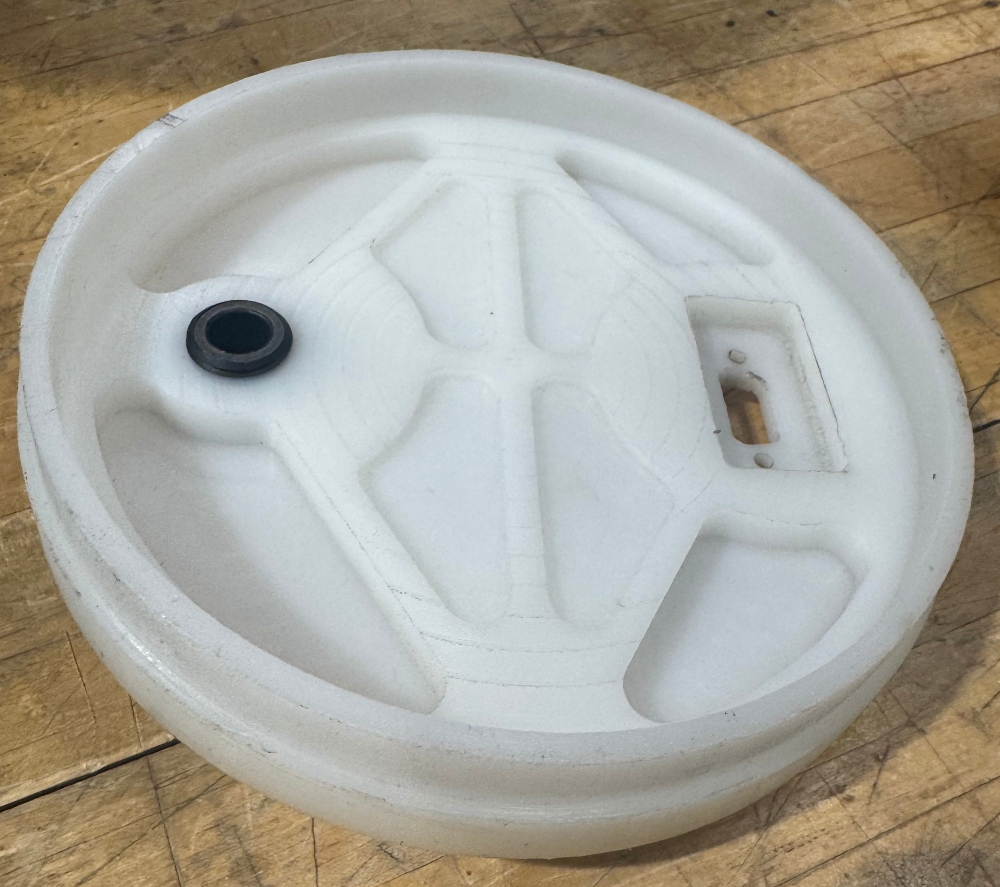

Blast Disk — Duke Aero
A rocket separation interface designed, analyzed, and fabricated for Duke AERO's "Devil's Advocate" (IREC 2026). My first machined part, and my first of many future contributions to Duke AERO.


The problem
Duke Aero's separation system required a redesigned pressure interface to reliably transmit CO2-generated force from the Tinder Rocketry RAPTOR CO2 Ejection System ↗ to the shear pins within a tightly constrained packaging envelope. Key design challenges included uncertainty in the transient CO2 pressure available during deployment, minimizing friction within the separation mechanism, and maintaining a pressure-tight seal while accommodating cable pass-throughs.
Four Problems, Four Decisions
Machining it
Once the design was finalized, I generated the machining toolpaths in Fusion 360 CAM and manufactured the blast disk on a CNC mill. Since this was my first machining project, I learned how to calibrate the machine, set work offsets, and verify the setup before cutting. The circular stock was secured using V-jaws to maintain concentricity while machining the profile and features.
Did it work?
Before flight, the complete separation system was validated through three full-scale ground tests. Each test resulted in a successful separation, giving the team confidence that the blast disk, pressure seal, and CO₂ deployment system would perform reliably under launch conditions. The design was subsequently flown at the 2026 International Rocket Engineering Competition (IREC), where a successful seperation event occured (hard to see on video).
Future Steps
With the blast disk successfully validated in ground testing and at IREC 2026, I'll be serving as Recovery Team Lead for Duke AERO during the 2026–27 season. One of the team's primary goals is developing a two-stage rocket, which will require a redesigned recovery architecture and an updated blast disk to accommodate the new packaging constraints. Building on the lessons learned from this project, I'll be leading the redesign of the separation system to improve manufacturability, reliability, and integration within the new vehicle.